地政学
プライアは西アフリカ沖の島国カーボベルデの首都で、政府、議会、外交、港、空港が集まる。欧州、アフリカ、米州を結ぶ航路と移民の記憶が濃く、小さな国の政治判断が大西洋の結節点に現れる島都だ。港も近い。
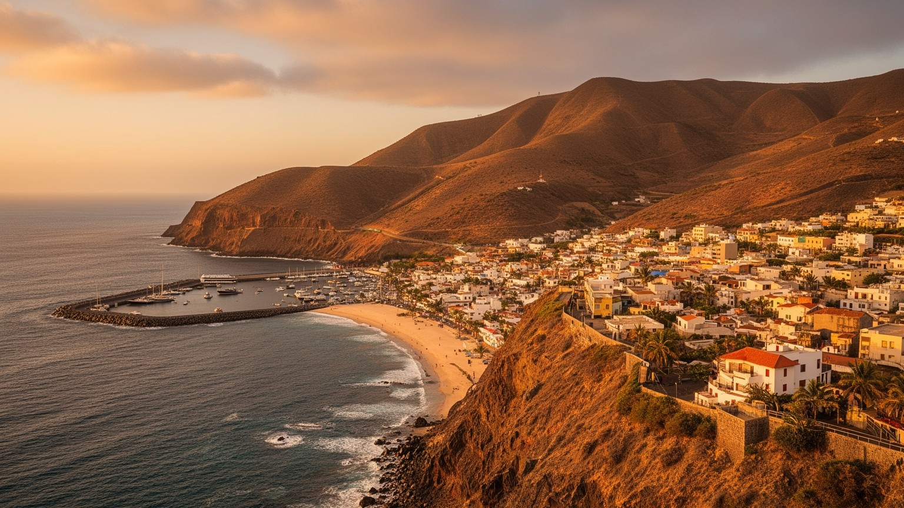
🇨🇻 カーボベルデ / サンティアゴ島 / World City Atlas
大西洋の島国カーボベルデの首都。プラトーの官庁街、港、空港、市場、丘の住宅地、クレオール音楽、移民と送金、干ばつと海岸リスクが、島の政治と日常を結びます。
都市の骨格
プライアは巨大都市ではありません。けれども、行政、港、空港、大学、音楽、送金、住宅地、海岸の気候リスクが近い距離に重なり、島国カーボベルデの政治と生活を最も濃く映す都市です。
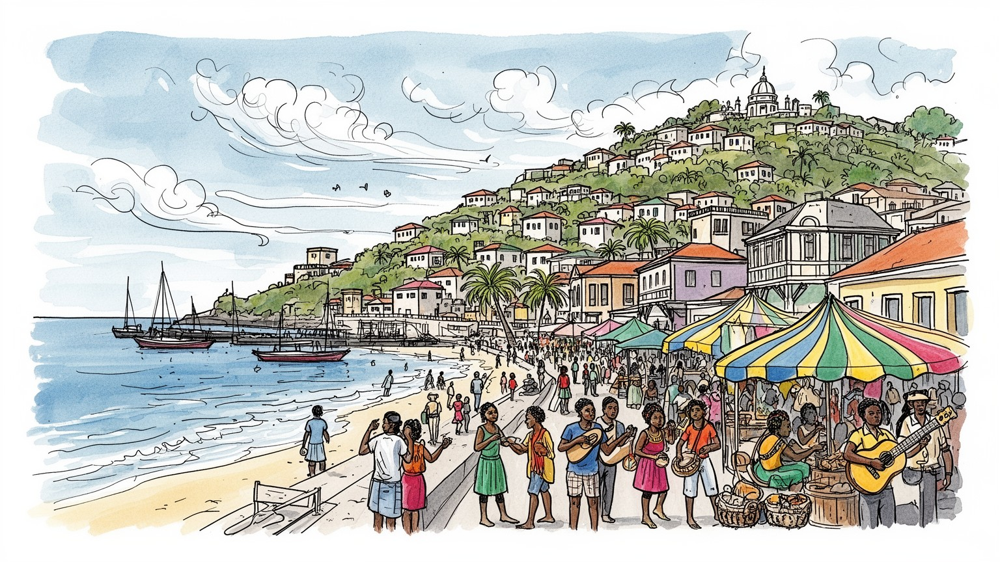
プライアは西アフリカ沖の島国カーボベルデの首都で、政府、議会、外交、港、空港が集まる。欧州、アフリカ、米州を結ぶ航路と移民の記憶が濃く、小さな国の政治判断が大西洋の結節点に現れる島都だ。港も近い。
行政、港湾、空港、商業、教育、医療、建設、通信、観光、音楽産業が雇用を作る。公務とサービス業の比重が高く、露店、ミニバス、港湾作業、送金に支えられた家計が都市の毎日を動かす。働く街でもある島都だ。
ポルトガル語とカーボベルデ・クレオール、カトリック、福音派、イスラム系移民、モルナ、フナナー、バトゥーケが重なる。音楽は娯楽だけでなく、離散家族、島の誇り、独立後の国民意識を結ぶ力である。深い文化だ。
旅行者はプラトー、スクピラ市場、港、海岸、サンティアゴ島内陸へ向かう。住民は水、家賃、交通、若者の仕事、海外移住、治安、暑さに向き合い、首都の便利さと島の制約を同時に生きる。水辺の生活も身近にある。
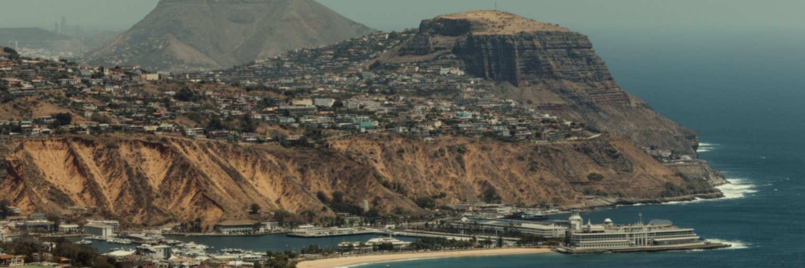
プライアの都市形態は、サンティアゴ島南岸の入り江、高台のプラトー、乾いた谷、港、丘の住宅地によって作られている。中心のプラトーには官庁、銀行、広場、教会、文化施設が集まり、海を見下ろす高台が政治の舞台になった。低地には港と市場、斜面には拡大する住宅地が広がり、短い距離の中で標高、風、日差し、道路の勾配が変わる。雨が少ない島では、谷はふだん乾いていても、雨季の強い雨で水の通り道になる。都市を広げる時には、住宅地の安全、道路、排水、給水、公共交通を地形に合わせて考えなければならない。海岸の眺めは首都の魅力だが、港湾、漁業、埋立、観光、海岸侵食が同じ水辺を求める。プライアを歩くと、行政都市の整った顔と、斜面に密集する生活の力がすぐ隣に見える。地形はこの街に美しい見晴らしを与えたが、同時に移動、住宅、気候リスクを複雑にした。首都の骨格を読むことは、島の限られた土地と水をどう分け合うかを読むことでもある。さらに高台と低地の差は、通勤や通学の疲れ、ミニバスの混雑、救急車の到着時間にも現れる。地図上では近い地区でも、坂、暑さ、舗装状況によって生活感は大きく変わる。都市計画は眺望の美しさだけでなく、こうした日々の移動をどう軽くするかも問われる。海風の通り道を残すことも、暑い首都では生活の質を左右する。
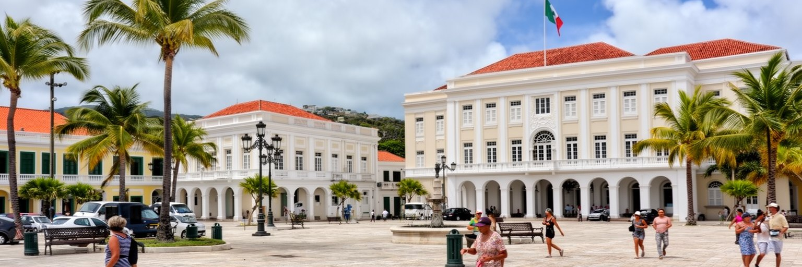
プライアは、カーボベルデの政治判断が集まる首都である。植民地期にはポルトガル帝国の大西洋拠点の一部であり、独立後は複数政党制、地方自治、外交、開発政策、移民政策を組み立てる場所になった。人口規模は小さいが、政府機関、議会、裁判所、大使館、大学、メディアが集中するため、島々の利害はここで交渉される。サンティアゴ、サンヴィセンテ、サル、ボアヴィスタ、フォゴなど、島ごとに観光、農業、港湾、火山、離島交通の課題は違う。首都が一つの島にあることは便利さを生む一方、他島からは距離と費用の問題として感じられる。プライアの政治を読むには、官庁街の建物だけでなく、フェリー、航空運賃、地方予算、若者の就職、海外移民との関係を見る必要がある。小国の外交では、欧州連合、西アフリカ、ポルトガル語圏、米国の離散社会、気候資金が重なる。首都は島国の内側を束ね、外側の世界へ国を説明する場所でもある。プライアの公共空間には、独立後の安定した民主政治への誇りと、限られた資源で国を運営する緊張が同時に漂う。選挙、予算、港湾投資、教育改革、水政策は抽象的な制度ではなく、各島の暮らしに直結する。小さな首都では政治家、記者、市民団体、商人の距離も近く、政策への期待と不満が街路で可視化されやすい。だから広場やメディアは、国民的な対話の場でもある。
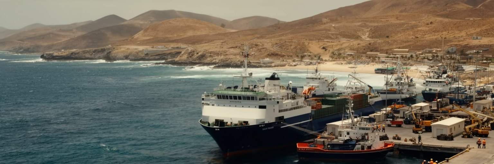
プライア港は、首都の日常を支える実務の場所である。貨物、燃料、建設資材、食品、車両、郵便、フェリー、漁船が港に集まり、島国の生活物資を動かす。カーボベルデは大陸から離れた群島であり、物価、建設、医療、教育、観光は輸送に強く左右される。港は華やかな観光名所ではないが、そこで働く荷役、通関、運転手、整備、漁業者、警備、清掃の仕事が都市の基礎を支えている。プライアからは他島への移動も重要で、フェリーや航空は家族訪問、通学、商売、行政手続き、医療受診を結ぶ生活線になる。大西洋の中継地としての歴史は、奴隷貿易、捕鯨、補給、移民、現代の物流へ形を変えて続いてきた。港を見ると、首都が島の内側だけで完結しないことが分かる。輸入に頼る経済では、燃料価格や国際物流の乱れが市場の値段にすぐ反映される。気候変動による高潮や荒天も港の運用に影響する。プライアの港は、世界経済の揺れと家庭の食卓をつなぐ場所であり、島国の脆さとたくましさを同時に示している。港湾が滞れば、商店の商品棚、建設現場、学校給食、医療品まで影響を受ける。だから港の近代化は単なる成長戦略ではなく、生活の安定を守る公共政策でもある。水辺を観光用に整える時も、働く港としての機能を見失えない。海の仕事は首都の裏方ではなく、島を生かす前線である。その視点が重要だ。
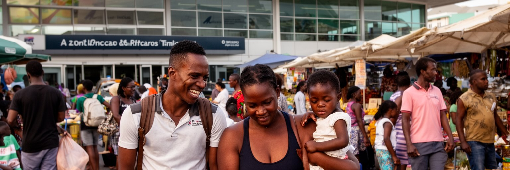
カーボベルデを理解するには、国内人口だけでなく海外の離散社会を見る必要がある。ポルトガル、米国、フランス、オランダ、ルクセンブルク、西アフリカ各地へ渡った人々は、送金、帰省、住宅投資、音楽、政治意識を通じてプライアとつながり続ける。家族の一部が海外にいることは珍しくなく、空港の到着ロビー、国際送金の窓口、携帯電話、SNS、夏の帰省が都市の時間を作る。送金は教育費、家の増改築、医療、商売の元手を支える一方、国内で安定した仕事を得にくい若者に、外へ出ることを現実的な選択肢として示す。移民は成功物語だけではない。離れた家族の介護、子どもの養育、帰国後の再就職、外国での差別、送金に頼る家計の不安定さもある。プライアの街路には、海外で稼いだ資金で建てられた住宅、帰省者向けの店、国外の音楽や服装の影響が見える。首都でありながら、都市の経済と文化は国境の外へ大きく広がっている。プライアを読むことは、島に残る生活と海を渡った家族の関係を読むことであり、移動がこの国の普通の生活条件であることを理解することでもある。海外で暮らす親族の成功は誇りになるが、残された家族には孤独や責任も残る。帰省期には街の消費が増え、音楽イベントや家族行事も活気づく。都市の人口以上に広い共同体が、プライアの住宅、教育、政治感覚を形づくっている。
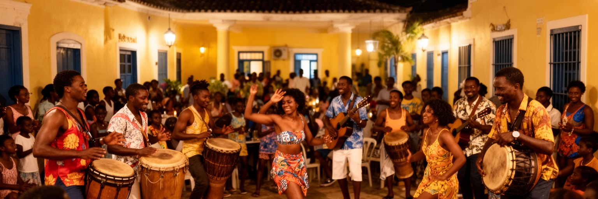
プライアの文化を語る時、音楽は欠かせない。モルナ、コラデイラ、フナナー、バトゥーケ、ヒップホップ、教会音楽が重なり、カーボベルデ・クレオールの言葉で喜び、別れ、移民、貧困、恋愛、島への郷愁が歌われる。音楽は観光客向けの演目である前に、家族の集まり、地域の祭り、夜のバー、ラジオ、学校、教会、政治集会で共有される生活文化である。サンティアゴ島のバトゥーケやフナナーは、植民地期の抑圧や農村のリズムを記憶し、独立後には国民文化の一部として再評価された。プライアには地方から来た学生や働き手、海外から戻る家族、他国からの移民が集まり、音楽の混ざり方も都市的である。商業化が進むと、音楽はホテルやイベントの消費に寄りやすいが、本来は言葉、身体、共同体、抵抗の表現でもある。若い世代のラップは失業、治安、格差、政治への不満を語り、伝統音楽と並んで首都の現在を映す。プライアを文化都市として読むには、舞台の上だけでなく、路地の練習、家庭の歌、教会の合唱、海辺の夜に耳を澄ませる必要がある。音楽は島々と海外の家族を結ぶ、見えない港でもある。録音スタジオや小さなライブの場は、若者が自分の言葉で都市を語る場所にもなる。観光が音楽を消費するだけでなく、演奏者の収入、著作権、練習場所へ戻る仕組みを持てるかが、文化都市としての厚みを左右する。
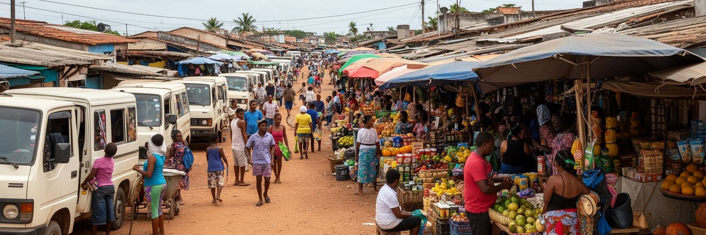
プライアの日常経済は、官庁や銀行だけでなく、市場、露店、ミニバス、修理屋、食堂、携帯電話店、小さな倉庫に支えられている。スクピラ市場のような商業空間では、衣料、食品、生活雑貨、輸入品、地元の農産物が並び、商人と客の会話が都市の情報網にもなる。島国では輸入品が多く、為替、燃料、船便の遅れが値段に響く。家計は賃金、送金、小商い、親族の助けを組み合わせて成り立つことが多い。市場の仕事は女性の労働を強く含み、家族を養う力である一方、暑さ、長時間労働、非公式性、信用販売、警備、衛生、場所代の問題も抱える。プライアの経済を読むには、国 GDP や観光収入だけでは足りない。朝の買物、ミニバスの乗り換え、屋台の食事、学校帰りの子ども、港から届く商品、雨の日の売上を見なければ、首都の生活感は分からない。市場は都市の弱さも強さも映す。失業や物価高があればすぐに緊張が現れるが、同時に人々は取引、冗談、信用、親族関係を通じて暮らしをつないでいる。プライアの首都性は、官庁の書類だけでなく、市場の粘り強い日常にも支えられている。露店を規制する政策も、衛生や歩行空間だけで判断すると生活の基盤を壊しかねない。商人の安全、保管場所、トイレ、日陰、交通整理を整えることは、都市の経済を正式な制度へ近づける実務でもある。日々の小さな売買が、首都の家計を守る。
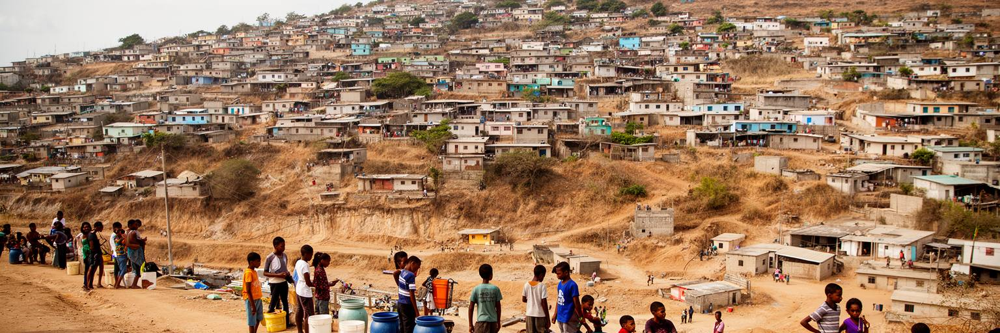
プライアの人口増加は、丘や谷沿いの住宅地に強く現れる。農村部や他島から仕事、学校、行政サービスを求めて人が集まり、首都の周辺には計画的な住宅と自力建設の家が混在する。家族が少しずつ部屋を増やし、海外送金で壁や屋根を整え、道路、給水、排水、街灯、学校、診療所が後から追いつく場所もある。住宅は単なる建物ではなく、移民、送金、土地制度、行政能力、家族の将来計画が交わる場である。首都では仕事や教育の機会が多い一方、若者の失業、治安への不安、薬物、家庭内の負担、ジェンダー格差、交通費の重さも見えやすい。斜面の住宅地では、雨季の水流、崩れやすい道路、遠いバス停が生活を左右する。プライアを社会問題から読む時、都市を危険な場所として単純化してはいけない。そこには家を建て、子どもを学校へ送り、店を開き、教会や近所で助け合う人々の努力がある。必要なのは、非公式な生活力を罰することではなく、安全な土地、基礎インフラ、雇用、若者の居場所、公共交通を整えることである。丘の住宅地は、首都の貧しさだけでなく、未来を島の中で作ろうとする意志も映している。住宅政策が遅れれば、家族は危険な場所でも自分で住まいを作るしかない。逆に、土地権利、融資、公共施設、バス路線が整えば、周辺地区は都市の負担ではなく活力になる。社会課題は、街の周縁に押し込めるほど解決から遠ざかる。
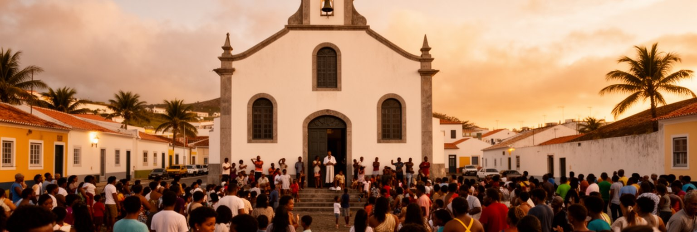
プライアの信仰は、カトリック教会、福音派教会、小さな祈りの集まり、移民が持ち込む宗教実践、家族の儀礼として都市に広がる。植民地期から続くカトリックの暦や教会建築は公共空間の記憶を作るが、現代の首都では福音派の成長、イスラム系移民の存在、無宗教の若者も含めて宗教風景は多層的である。教会は礼拝だけでなく、葬儀、結婚、合唱、青少年活動、貧困家庭への支援、海外へ渡った家族のための祈りを受け止める。島国では家族や近所のネットワークが生活の安全網になりやすく、宗教施設はその結節点になる。信仰は時に保守的な価値観やジェンダー規範を強めるが、孤立した人に相談先を与え、移住で離れた家族を精神的につなぐ力も持つ。プライアを宗教から読むには、中心部の教会だけでなく、周辺住宅地の小さな礼拝所、夜の集会、歌、葬列、慈善活動を見る必要がある。観光都市としての明るい海辺の奥に、病気、失業、移民、喪失に向き合う祈りの時間がある。信仰は公共サービスの不足をすべて補うものではないが、首都の共同体が崩れないための重要な支えになっている。宗教施設はまた、移住で分断された家族が互いを思い出す場所でもある。教会の鐘、合唱、祈りの集会は、忙しい市場や港とは違う都市の時間を作る。公共空間に消費しない居場所を残す意味も大きい。静かに座れる場所があることは、都市の尊厳でもある。
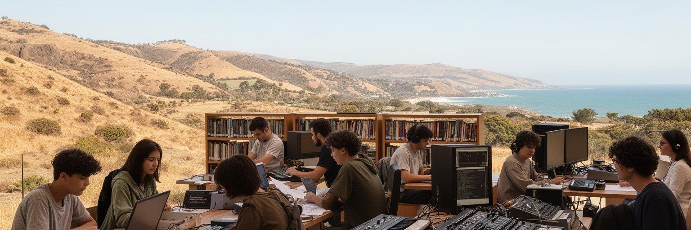
プライアには大学、専門学校、中等教育機関、図書館、文化施設、スポーツの場が集まり、若者が島内外から学びに来る。教育は小国にとって最も重要な資源の一つであり、公務、観光、通信、医療、教育、国際機関、起業へ進む道を開く。だが、学歴がすぐ安定した仕事に結びつくとは限らない。若者は国内で仕事を探すか、海外へ出るか、家族の商売を手伝うか、音楽やデジタル分野で試すかを現実的に考える。プライアの街路には、学校帰りの制服、大学生のカフェ、携帯電話で制作する音楽、スポーツクラブ、就職を待つ時間が同居する。首都は機会の多い場所だが、家賃、交通費、家庭の期待、治安不安、語学力、資格の不足が若者の選択を狭めることもある。教育政策を読むには、学校の数だけでなく、卒業後の仕事、女性の進学、障害のある学生の移動、海外留学後に戻れる職場を見る必要がある。プライアの未来は、若い世代が島を離れるしかないと感じるか、島に残っても尊厳ある仕事と文化を作れると感じるかで大きく変わる。教育は首都の希望であり、同時に未解決の雇用問題を最も鋭く映す鏡でもある。職業訓練、語学、デジタル技能、観光の質を高める教育が地域の企業と結びつけば、若者の選択肢は増える。学校の外にも、音楽、スポーツ、地域活動、起業支援の場が必要である。学ぶ場所と働く場所をつなぐことが、首都の社会安定に直結する。
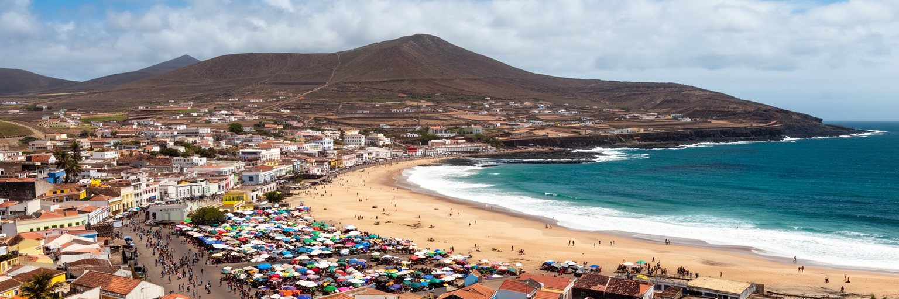
プライアの観光は、サル島やボアヴィスタ島のリゾートとは性格が違う。ここでは海辺で過ごすだけでなく、プラトーの広場、スクピラ市場、港、クエブラ・カネラの海岸、音楽の夜、サンティアゴ島内陸の村、そして世界遺産シダーデ・ヴェーリャへ向かう旅が重なる。首都は国の政治と日常を見せる入口であり、旅行者はカーボベルデが単なるビーチ目的地ではないことを知る。観光はホテル、ガイド、飲食、交通、土産物、音楽イベントに収入をもたらすが、住民の市場や海岸を消費空間に変えすぎれば摩擦も生む。プライアでは、観光の規模を大きくするだけでなく、地元の音楽家、料理人、ガイド、職人、農村コミュニティへ利益が届く形が重要である。シダーデ・ヴェーリャは大西洋奴隷貿易の記憶を含む重い遺産であり、観光は美しい景色だけでなく歴史の暴力も伝えなければならない。プライアを訪れる旅は、首都の市場で日常を見て、島の内陸で農業と干ばつを知り、海岸で気候リスクを感じることで深くなる。観光客にとっても、住民の生活空間を尊重する態度が、この都市をより豊かに読む鍵になる。空港からホテルへ直行するだけでは、首都の意味は薄くなる。路線バス、地元食堂、音楽の場、旧市街への道を丁寧に使うことで、旅行の消費は地域の仕事に近づく。観光は島の歴史を軽く扱わない時、都市への敬意を帯びる。
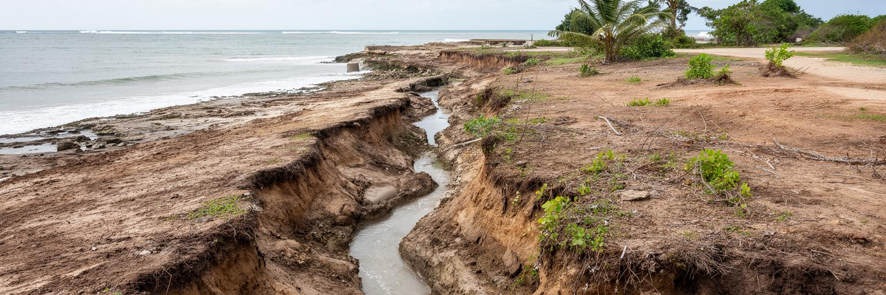
プライアの気候は乾燥が強く、雨季は短く不安定である。水は都市の最も基本的な制約であり、家庭、ホテル、学校、病院、建設、街路樹、農業を支えるために、貯水、淡水化、配水、節水、料金、停電への備えが欠かせない。ふだん乾いた谷や道路でも、強い雨が降れば短時間で水が流れ、排水の弱い住宅地や低地に被害をもたらす。気候変動は干ばつ、熱波、豪雨、海面上昇、海岸侵食を組み合わせ、島国の首都に複数の圧力をかける。暑さは屋外労働者、高齢者、子ども、冷房のない住宅に負担を与え、海岸の変化は港、道路、観光、漁業に影響する。プライアの気候適応は、大きなインフラだけでなく、雨水路の清掃、斜面住宅の安全、日陰、公共交通、海岸の管理、節水教育として進む必要がある。水が限られる都市では、裕福な地区だけが安定した供給を得るような不公平が生まれやすい。気候政策は環境の話であると同時に、住民の健康、家計、移動、住宅の安全を守る社会政策である。乾いた風景の美しさの背後で、プライアは水をどう確保し、暑さと海の変化にどう備えるかを毎日問われている。学校や市場に日陰と水を増やすこと、斜面の排水を保つこと、海岸の建設を慎重にすることは、派手ではないが命を守る仕事である。島国の首都では、気候適応が都市の基本設計そのものになる。水を公平に分ける仕組みが、都市への信頼を支える。
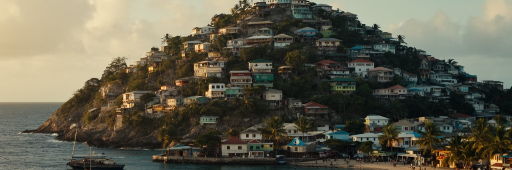
プライアを読む面白さは、都市の大きさよりも関係の広がりにある。プラトーの官庁街は国家を動かし、港と空港は島々と外の世界を結び、市場は家計と会話を支え、音楽は離散した家族と島の記憶をつなぐ。丘の住宅地には、農村や他島から来た人、海外送金で家を建てる家族、仕事を探す若者、宗教共同体、公共インフラの不足が重なる。観光客が見る海岸の明るさの背後には、水の制約、輸入物価、住宅拡大、気候リスク、失業、治安への不安もある。けれども、プライアを問題だけで見るのも不十分である。この街には、島国が独立後に作ってきた民主政治、クレオール文化、海外社会との強いつながり、音楽の創造力、日常経済の粘り強さがある。大西洋の小国の首都は、欧州、アフリカ、米州の間で人と資金と言葉を動かし続けている。プライアを歩く時は、港、教会、市場、大学、坂道、ミニバス、海岸、夜の音楽を一つの都市として見るとよい。そこに、島の制約を抱えながら世界と結ばれて暮らす都市の姿が見えてくる。首都の価値は規模ではなく、限られた土地と水の中で政治、文化、家族、交易を結び直す力にある。プライアは大西洋の周縁ではなく、離散した人々の記憶と現在の生活が戻ってくる中心でもある。小さな街路の会話まで含めて見ると、ここが国の行政都市であるだけでなく、海を越えた共同体の集会所でもあることが分かる。